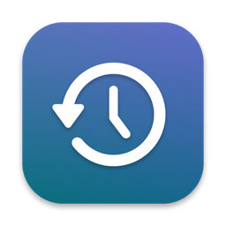

BackframePrivacy Policy
No accounts, ads, analytics or tracking, and nothing about you or your work is sent to us.
This policy explains how Backframe (“the app”), a Mac app: an encrypted, searchable history of what was on your screen, kept on your Mac, developed by Kevin Fitzgerald, handles information.
Information we collect
None. Backframe does not collect, store, sell or share personal information on any server, and it does not include analytics, advertising, crash-reporting or tracking tools of any kind.
Information stored on your Mac
To work, the app keeps the following on your Mac only:
- Saved frames, only while capture is switched on (it starts off): a downscaled screenshot (at most 1600 pixels wide) of the display you're using, kept only when the screen changed, plus a small thumbnail
- The text read from each frame on your Mac by Apple's Vision, with each line's position, and the window title, app name and time it was saved
- A search index made of keyed hashes of word beginnings (never the words themselves)
- Your settings (capture on or off, how often to look, the pause shortcut, excluded apps and title words, how long to keep frames and the disk cap)
- Two items in your Mac's login Keychain: the random encryption key for your history, and your license key or free-trial start date
Frames, text, the index and settings are in ~/Library/Application Support/Backframe on your Mac (history.sqlite, frames/ and config.json). Each frame's picture, thumbnail, text, window title and app name are encrypted with AES-256-GCM using keys derived from one random key that is made on your Mac and kept in your login Keychain, readable only on this Mac while it's unlocked and never synced. When frames were saved and how big they are is not hidden. Frames older than your limit (30 days by default) or past your disk cap (5 GB by default) are deleted automatically; Delete Everything removes the whole history and its key.
Your Mac
Backframe runs in Apple's App Sandbox and may write only its own folder, ~/Library/Application Support/Backframe. It looks at the screen only while you have capture switched on, using macOS's Screen Recording permission, and skips password managers, Messages, private browser windows, windows whose titles mention banking, anything while a password field is active, a locked screen, idle time and its own window, plus any app or title word you add. It never records audio, keystrokes or the pointer. The text in each frame is read on your Mac; nothing is uploaded, synced or shared.
Network
Backframe is sold directly through Gumroad, and its only network requests are the license check with Gumroad (your license key, when you enter it and about once a week), checks for app updates at fitztoppicks.com and the More Mac Apps list from fitztoppicks.com. None of them sends your frames, their text, your searches or anything about what was on your screen.
Updates and license checks
Backframe, downloaded directly from Gumroad or fitztoppicks.com and signed with Apple’s Developer ID, checks for app updates with Sparkle, a standard open-source updater: it downloads a small update list (an appcast) from fitztoppicks.com, which sees only the app’s version and, like any website, your internet address, and it downloads an update only when one is available and you choose to install it (or have turned on automatic updates). When you enter a license key, Backframe sends that key to Gumroad to verify it, and checks it again about once a week; that is all it sends to Gumroad. Neither sends anything about you, your files or how you use the app.
Purchases
Backframe is sold directly through Gumroad, which handles payment and sends your receipt and license key; we never see your payment details. The app sends your license key to Gumroad to check it (when you enter it and about once a week); that is all it sends to Gumroad.
Children’s privacy
Because the app collects no personal information from anyone, it does not knowingly collect personal information from children.
Changes to this policy
If this policy changes, the new version will be posted on this page with a new effective date. If the app ever begins collecting data, this policy will be updated before that happens.
Contact
Questions about this policy or the app: help@fitztoppicks.com.